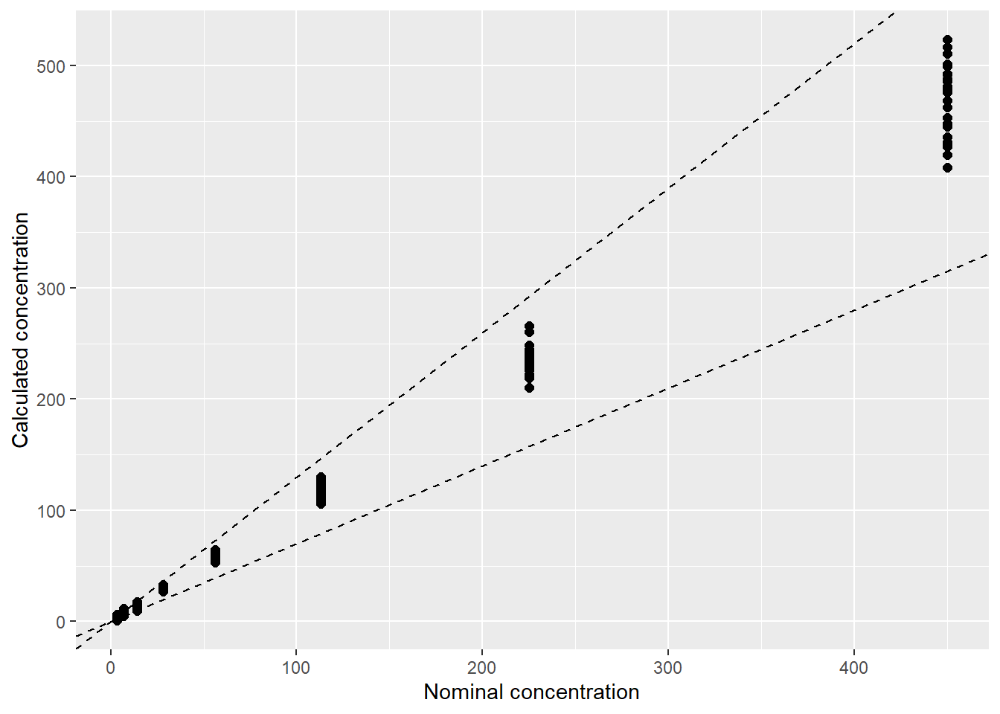
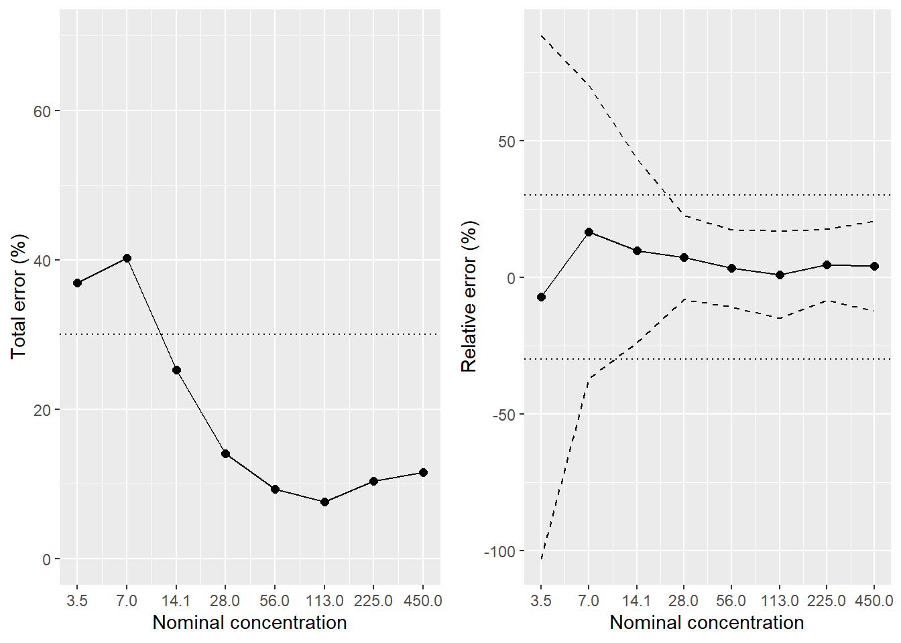

在製藥工業開發產品的過程中，分析方法 (Analytical Method) 扮演了相當重要的角色。對分析方法的確效評估通常有下列幾項：
- Linearity
- Accuracy
- Precision
- Range
- Limit of Quantification
- Limit of Detection
本篇主要引用 Pharmaceutical Statistics Using SAS: A Practical Guide 一書中的第四章 Statistical Considerations in Analytical Method validation 資料和內容，並以 R 進行分析和結果展示。此文中的 SAS 程式碼和資料可以在這裡下載。
讀取資料及整理
範例資料有兩部分，Calibration samples (CS) 及 Validation samples (VS)，其副檔名為 sas7bdat，需呼叫 package 來讀取。
library(sas7bdat)
cs0=read.sas7bdat("elisa_cs.sas7bdat")
vs0=read.sas7bdat("elisa_vs.sas7bdat")接著對資料進行適當的排列轉換，將 rep1, rep2, rep3 從寬表格轉成長表格，並創建 run 變數供後續分析使用。
#install.packages("tidyr")
library(tidyr)
cs=gather(cs0,paste0("rep",1:3),key="rep",value="signal")
cs$rep=factor(gsub("rep","",cs$rep))
cs$run=factor(paste0(cs$plate,cs$series))
vs=gather(vs0,paste0("rep",1:3),key="rep",value="signal")
vs$rep=factor(gsub("rep","",vs$rep))
vs$run=factor(paste0(vs$plate,vs$series))Linearity
這邊考慮的 Calibration Curve 為 4-parameters logistic regression model :
\[y=f(x)=\beta_1+\frac{\beta_2-\beta_1}{1+(x/\beta_3)^{\beta_4}}, \]
其反函數為
\[x=f^{-1}(y)=\beta_3 \left(\frac{\beta_2-\beta_1}{y-\beta_1}-1 \right)^{1/\beta_4}\]
f=function(x,p1,p2,p3,p4){ p1+(p2-p1)/(1+(x/p3)^p4) }
invf=function(y,p){ p[3]*((p[2]-p[1])/(y-p[1])-1)^(1/p[4]) }模型採用的 variance function 為:
\[var(x)=\sigma^2 f(x)^\theta\]
依序對 Calibration samples 的每一的 run 進行非線性模型的配適，並由模型估計值套入 invf 函數中，回推 Validation samples 每一的 run 的濃度值：
library(dplyr)
library(nlme)
# negative log-likelihood function
nLL=function(dd,p){
LL=function(x){
signal=x[1];conc=x[2]
log(dnorm(signal,f(conc,p[1],p[2],p[3],p[4]),
sqrt(p[6]*f(conc,p[1],p[2],p[3],p[4])^(2*p[5]))))
}
-sum(apply(dd,1,LL))
}
# initial value
par0=c(3,0.2,250,1,1,0.01)
for(i in levels(cs$run)){
# find maximum likelihood estimates by cs sample
fit=nlminb(start=par0,nLL,dd=cs%>%filter(run==i)%>%select(signal,concentration))
# back-calculated concenration for vs sample
vs$calc.conc[vs$run==i]=invf(vs$signal[vs$run==i],p=fit$par[1:4])
}接著，我們可以用 ggplot 畫出原始濃度和計算濃度的比較圖，並加上 [-30%, 30%] 的接受區間。
library(ggplot2)
ggplot(vs,aes(x=concentration,y=calc.conc))+geom_point(size=2)+
xlab("Nominal concentration")+ylab("Calculated concentration")+
geom_abline(slope = 1.3,linetype="dashed")+
geom_abline(slope = 0.7,linetype="dashed")
Accuracy and Precision
考慮的模式為 One-factor random effects Analysis of Variance model，run 為其中的 random effect：
\[x_{ij}=\mu+\alpha_i+\varepsilon_{ij},\]
我們使用 nlme 裡的 lme 函數來進行模式參數的估計，並計算後續會用到的數值，將其列成表單。(公式推導請參閱原文)
conc.levels=as.numeric(levels(factor(vs$concentration)))
Res=numeric()
for(i in conc.levels){
fit=lme(calc.conc~1,random=~1|run,vs%>%filter(concentration==i),na.action=na.omit)
V=as.numeric(VarCorr(fit))
mu=fit$coefficients$fixed
cv.b=100*V[3]/i; cv.w=100*V[4]/i
RE=100*(mu-i)/i; CVip=100*sqrt(V[1]+V[2])/i; TE=RE+CVip
N=fit$dims$N; p=fit$dims$ngrps[1]; n=N/p;
R=V[1]/V[2]; B=sqrt((R+1)/(n*R+1))
v=(R+1)^2/((R+(1/n))^2/(p-1)+(1-(1/n))/N)
LB=RE-qt((1+0.95)/2,v)*sqrt(1+(1/(N*B^2)))*CVip
UB=RE+qt((1+0.95)/2,v)*sqrt(1+(1/(N*B^2)))*CVip
Res=rbind(Res,c(i,mu,RE,LB,UB,cv.w,cv.b,CVip,TE))
}
# Create html table
library(knitr)
library(kableExtra)
Res=Res%>%as.data.frame()
names(Res)=c("Conc","Calc.conc","RE","LB","UB","CVW","CVB","CVip","TE")
kable(format(round(Res,1),nsmall=1),align='c',
col.names=c("Nominal Concentration","Calculated Concentration",
"Relative error (%)","95 % lower bound of RE",
"95 % upper bound of RE","Within-run CV (%)",
"Run-to-run CV (%)","Intermediate precision CV (%)",
"Total Error (%)")) %>%
kable_styling(bootstrap_options = c("striped", "hover",
"condensed", "responsive"),
font_size = 12)| Nominal Concentration | Calculated Concentration | Relative error (%) | 95 % lower bound of RE | 95 % upper bound of RE | Within-run CV (%) | Run-to-run CV (%) | Intermediate precision CV (%) | Total Error (%) |
|---|---|---|---|---|---|---|---|---|
| 3.5 | 3.2 | -7.3 | -102.9 | 88.4 | 37.7 | 23.0 | 44.2 | 36.9 |
| 7.0 | 8.2 | 16.6 | -37.1 | 70.4 | 14.7 | 18.5 | 23.6 | 40.3 |
| 14.1 | 15.5 | 9.8 | -23.8 | 43.4 | 12.7 | 8.8 | 15.5 | 25.3 |
| 28.0 | 30.0 | 7.3 | -8.1 | 22.7 | 4.3 | 5.2 | 6.8 | 14.1 |
| 56.0 | 57.9 | 3.3 | -10.8 | 17.4 | 2.7 | 5.3 | 6.0 | 9.3 |
| 113.0 | 114.1 | 1.0 | -15.0 | 16.9 | 2.4 | 6.2 | 6.6 | 7.6 |
| 225.0 | 235.3 | 4.6 | -8.5 | 17.7 | 3.7 | 4.5 | 5.8 | 10.4 |
| 450.0 | 468.5 | 4.1 | -12.2 | 20.5 | 5.5 | 5.0 | 7.4 | 11.5 |
最後，分別畫出 Total error 的趨勢變化，以及 Relative error 的趨勢變化，並加上 95% 信賴區間。
# package to merge two figures
library(ggpubr)
g1=ggplot(Res,aes(x=Conc,y=TE))+geom_line()+geom_point(size=2)+
geom_hline(yintercept=c(-30,30),linetype="dotted")+
ylim(0,70)+scale_x_log10(breaks=Res$Conc)+
xlab("Nominal concentration")+ylab("Total error (%)")
g2=ggplot(Res,aes(x=Conc,y=RE))+geom_line()+geom_point(size=2)+
geom_hline(yintercept=c(-30,30),linetype="dotted")+
scale_x_log10(breaks=Res$Conc)+
geom_line(aes(y=LB),linetype="dashed")+
geom_line(aes(y=UB),linetype="dashed")+
xlab("Nominal concentration")+ylab("Relative error (%)")
ggarrange(g1,g2,ncol=2)
備註
原文中計算 Intermediate precision CV (%) 的 SAS code 有誤，正確應為 100*sqrt(sigma_w_sq+sigma_b_sq)/t1.concentration，筆者誤植為 100*sqrt(sigma_w_sq+sigma_w_sq)/t1.concentration。